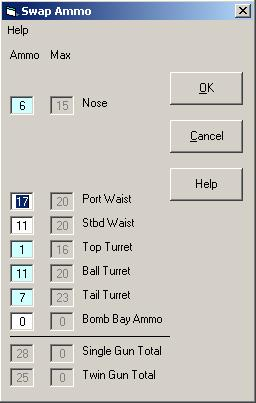

The Swap Ammo form allows the player to move ammo between like positions between waves and wave attacks. No penalty is incurred by swapping ammo. Ammo may not be 'thrown away' during the swap, nor may extra ammo be magically 'acquired'. Hereafter, "single gun" refers to both single .50s on B-17s and B-24s, and twin .303s on the Lancaster, while "twin gun" refers to twin .50s on B-17s and B-24s, and quad .303s on the Lancaster.

A B-24's port waist gun is disabled. Swap out its ammo.